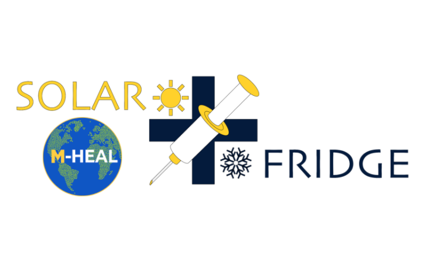

▶ View Projects
Michigan Health Engineered for All Lives is a student-run organization of 200 students at
the University of Michigan focused on
improved healthcare and medical technologies all around the world. The club features 12
independent project teams
that cover a range of global health problems, including developing hypothermia therapy for
neonates with asphyxia as well as
improving nutrition for children with cerebral palsy in Bangladesh.
My job as IVP was to manage and oversee the progress of all 12 remarkable projects and
provide resources and opportunities for
each of the teams to grow. I helped organize design reviews for the whole club to attend,
facilitate recruiting, meet with external partners,
and work closely with our President and External Vice President to direct the rest of our
14-person board.

Solar Fridge is a student-run project team that is a part of Michigan Health
Engineered for All Lives. Our 15 member team is iterating through insulation and
thermoelectric
refridgeration designs in order to cool vaccine coolers. We work with a community
partner in Rincon Claro, Dominican Republic to elicit requirements.
Many developing countries lack the resources to consistently provide electricity to
residents, and natural disasters
further deplete electricity availability.
We have improved the amount of time that dorm fridges can sustain a 2-8oC range
by over 800%, and our goal is to extend this
range so that the clinic can maintain vaccine viability for at least 72 hours when the power
shuts off.
As the project team lead, I scheduled and lead meetings, gave presentations to our club,
applied for grants and
managed finances, attended workshops, communicated with our community partner, and lead
recruitment. I also oversaw a
lot of our project design and am particularly focused on creating a touchscreen LCD digital
data logger that displays
current and previous vaccine temperatures. Also, I created a PCB to condense the
thermocouple leads and implemented
the Arduino code driver that controls the display and SD card interface.
More information can be found at our team
home page.
TechLab at Mcity
Fall 2020 Cohort Member
During the fall semester of my junior year, I worked on a team of four students as part
of a
company-in-residence program. Our team worked exclusively with May Mobility, an
autonomous shuttle startup
that has deployed shuttles in several Michigan communities such as Ann Arbor, Detroit,
and Grand Rapids, as
well as in Providence, RI.
Our team developed a hardware tool that improved testing procedures for the company,
which allowed for more
consistent test results and an ability to demonstrate safety. I personally worked on the
wiring component of
the tool to make sure that it works in non-ideal conditions and can be easily set up by
test engineers.
It would be helpful to show some pictures of the product and detail more about how it
works,
but this information is restricted by the non-disclosure agreement.
As part of the UM 3D Printing Club, a handful of teams entered into the GM Additive
Manufacting
Design Competition. The goal of the competition was to be able to design an improvement to a
car
with the aid of a 3D printer.

In order to prevent drivers from texting and driving, I designed a phone holder that
restricted
phone access unless the car was at a complete stop.
I designed the parts in AutoCAD in the shape of a box with a slot to fit a phone into.
Once I 3D printed the part, I was able to attach a Servo motor to the inside as part of a
mechanism to
open and close the lid. I controlled this using an Arduino that attached to the back and
also interfaced
with a GPS module (that determined whether the car was in motion) and an ultrasonic sensor
(for hands-free opening of the lid).
I was honored to place 2nd in the competition, and I developed substantial design
experience with Arduino and
3D printing from the project.
SmartCycle Machine Learning Recycling App
May 2020 - Sept 2021

It becomes more apparent every year that climate change is rapidly changing the world. My mission
is to
help stop the harmful effects of climate change by using technology. Recently, I took
some time to do
a personal project to encourage recycling.
The only incentive to recycling in most US states is a moral obligation to the environment. In
other countries
such as Germany, reverse vending machines for recycling are
much more widespread.
I wanted to make an application and sensor that would affordably adapt regular recycling bins to
function as
reverse recycling machines, while still rewarding recyclers. To start, users would be able to
use the points at local
restaurants and stores. In the future, it would be revolutionary to convert the point system
directly into a monetary system
to sync with bank accounts, much like how reverse vending machines reward recyclers with money.

Currently, my app only runs on iOS, but I hope to be able to develop
the technology and publish it to the app store some day.
I was able to take advantage of the IBM Cloud Machine Learning algorithm to train data on
thousands of images of
bottles, cans, glasses, and other common recyclable items that I pulled from the internet
. I also crafted the algorithm to discriminate against
many common reusable water bottles to prevent people from cheating the system. The packaged data
was then trained using the Apple CoreML program, which could be easily
integrated into my Swift files that I made for the different screens of the app. Data for each
user such as name, email,
points accumulated, and rewards were backed up using Google Firebase.